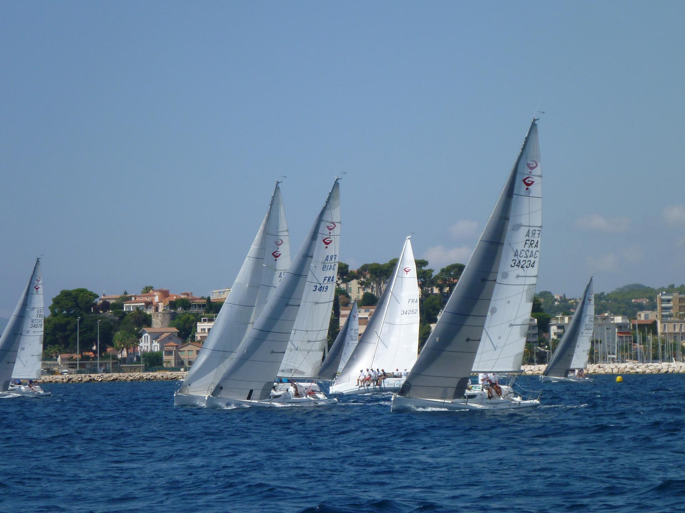

COMPÉTITIONS · L’ÉNERGIE DU COLLECTIF
Le goût du défi.
La force du collectif.
Affiner ses manœuvres, trouver les bons automatismes et vibrer en régate. Le groupe d’entraînement fait de la progression une aventure d’équipage.
Échanger sur mon projet
- Au Havre
- Entraînements sur J80
- À Cherbourg
- Entraînements sur Grand Surprise
- L’engagement
- Une pratique régulière sur l’année
LE GROUPE D’ENTRAÎNEMENT
Progresser ensemble.
Se dépasser sur l’eau.
Le groupe d’entraînement, ou GE, propose une pratique sportive de la voile en habitable. On y recherche la performance, mais aussi le partage d’expérience et la mise en commun des compétences.
Les entraînements sur l’eau sont complétés par des réunions d’avancement à Paris, consacrées aux fondamentaux techniques de la régate et au débriefing des navigations. L’objectif est d’identifier ensemble les points à améliorer pour les prochaines sorties.
Le groupe bénéficie du coaching de Bernard, adhérent de l’ATSCAF et entraîneur fédéral. Cet accompagnement associe recherche de performance et partage des compétences au sein de l’équipage.
SUR L’EAU ET À TERRE
Un projet qui se construit
- S’entraîner sur deux supports
Le programme comprend des navigations sur J80 au Havre et sur Grand Surprise à Cherbourg, pour travailler les fondamentaux et les automatismes en équipage.
- Analyser et partager
Les échanges à Paris permettent de revoir les points techniques, de préparer les entraînements et de tirer les enseignements des sorties précédentes.
- Se retrouver en compétition
Le programme nautique associe entraînements et participation à des compétitions. Le calendrier publié par le club mentionne notamment le championnat d’hiver, le Trophée des entreprises, la Coupe IdF à la mer et le Spi Ouest-France.
LES RENDEZ-VOUS DU GROUPE
Le calendrier publié par le club
L’année de ces rendez-vous n’est pas précisée sur la page d’origine, dont la dernière mise à jour affichée est le 25 mars 2025. Ce calendrier est présenté à titre de référence : il ne constitue pas un programme confirmé pour la saison en cours. Contactez le groupe pour connaître les prochaines dates.
| Dates | Lieu | Support | Rendez-vous |
|---|---|---|---|
| 3–4 décembre | Le Havre | J80 | Entraînement et championnat d’hiver |
| 21–22 janvier | Le Havre | J80 | Entraînement J’s en Folies |
| 4–5 février | Le Havre | J80 | Entraînement et championnat d’hiver |
| 18–19 février | Le Havre | J80 | Entraînement et championnat d’hiver |
| 11–12 mars | Le Havre | J80 | Trophée des entreprises |
| 17–19 mars | Le Havre | J80 | Coupe IdF à la mer |
| 7–10 avril | La Trinité | Grand Surprise (GS!) | Spi Ouest-France |
UN ENGAGEMENT SPORTIF ET COLLECTIF
Les prérequis pour embarquer
Le GE s’adresse aux pratiquants qui souhaitent s’investir dans la voile sportive en habitable. Pour profiter des entraînements et progresser avec son équipage, le club demande :
- Une expérience préalable en dériveur ou en croisière. Elle doit permettre de développer des automatismes en voile sportive. Les niveaux 3 ou 4 FFVoile constituent le repère d’entrée idéal ; le groupe n’est pas adapté aux débutants de niveaux 1 et 2.
- Une réelle envie de pratiquer la voile sportive. Dans certains cas, une bonne tonicité et un esprit sportif, notamment acquis en compétition dans un autre sport, peuvent compenser certaines lacunes par rapport au niveau 4. Ce point est à évoquer avec le groupe.
- Une disponibilité régulière, sur l’eau comme à terre. La participation implique un engagement annuel avec son équipage, pour les navigations comme pour les réunions à Paris.
AVANT DE REJOINDRE LE GROUPE
Les questions pratiques
Faut-il déjà avoir pratiqué la régate ?
Le club cite une expérience en dériveur ou en croisière, avec les niveaux 3 ou 4 FFVoile comme repère idéal. L’envie de pratiquer la voile sportive et les aptitudes de chacun comptent également. Présentez votre parcours au groupe ; cette activité n’est pas destinée aux débutants.
Quelle disponibilité faut-il prévoir ?
Le projet demande un engagement annuel avec son équipage et une participation régulière, sur l’eau comme à terre. Le calendrier est à discuter avec les responsables du groupe.
Quel est le programme et le budget ?
Le programme comprend les entraînements sur J80 au Havre, sur Grand Surprise à Cherbourg et des compétitions. Le calendrier ci-dessus ne précise pas d’année et la page d’origine ne donne pas de tarif. Contactez le club pour confirmer les prochaines dates et la participation aux frais.
Comment rejoindre le groupe ?
Écrivez à atscaf.voile.paris@gmail.com pour demander des renseignements ou vous inscrire : le club vous transmettra un bulletin d’inscription. Indiquez votre expérience, vos motivations et vos disponibilités pour préparer cet échange. Si vous n’êtes pas encore adhérent, retrouvez les bulletins et les démarches dans la rubrique adhésion.